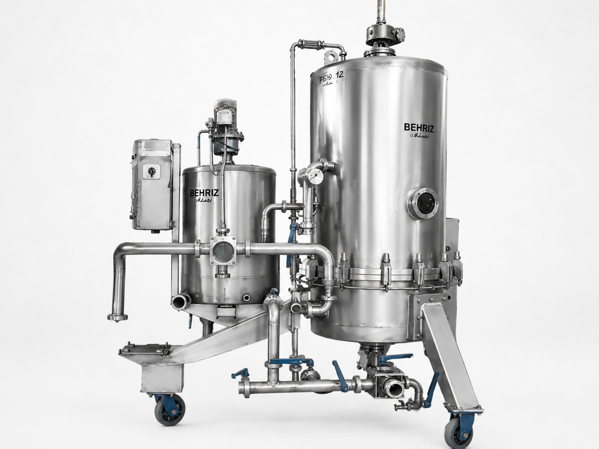

فیلتر کیزلگور چیست؟
فیلتر صفحهای کیزلگور از تجهیزات رایج فیلتراسیون در کارخانههای تولید ماءالشعیر و آبمیوه است. فرایند با ترکیب لایههای فیلتر در اندازههای مختلف و جریان کنترلشده سیال انجام میشود و امکان پایش پیوسته جریان و فشار را فراهم میکند.
کاربرد در خط تولید
فیلتراسیون شربت، آبمیوه و ماءالشعیر بهصورت ثابت یا پرتابل و متناسب با آرایش خط.
مشخصات قابل سفارش
| جنس مخزن و فرمات | Stainless Steel AISI 304L |
|---|---|
| جنس صفحات فیلتر | Stainless Steel AISI 316L |
| ظرفیت | ۱۵٬۰۰۰ تا ۳۰٬۰۰۰ لیتر در ساعت |
| اتوماسیون | نیمهاتوماتیک و تماماتوماتیک |
مزیتهای این راهکار
- راندمان بالای فیلتراسیون
- تعمیر و نگهداری آسان
- شستوشوی مستقیم و معکوس
- امکان کنترل پیوسته جریان و فشار
- قابلیت طراحی ثابت یا پرتابل
انتخاب تجهیز مناسب از کجا شروع میشود؟
انتخاب نهایی باید براساس نوع محصول یا سیال، ظرفیت واقعی خط، شرایط نصب، سطح اتوماسیون و تجهیزات بالادست و پاییندست انجام شود. برای جلوگیری از ایجاد گلوگاه، مشخصات این دستگاه باید در کنار کل فرایند بررسی شود.
پرسشهای متداول
فیلتر کیزلگور برای چه محصولاتی مناسب است؟
برای شفافسازی شربت، آبمیوه و ماءالشعیر کاربرد دارد؛ انتخاب دقیق به ویژگی سیال و هدف فیلتراسیون وابسته است.
ظرفیت دستگاه چقدر است؟
مدلهای ثبتشده بهریز مبدل در بازه ۱۵٬۰۰۰ تا ۳۰٬۰۰۰ لیتر در ساعت طراحی میشوند.
امکان ساخت اتوماتیک وجود دارد؟
بله، دستگاه میتواند بهصورت نیمهاتوماتیک یا تماماتوماتیک طراحی شود.
راهکارهای مرتبط
طراحی سیستم فیلتراسیون نوشیدنی · کندل فیلتر صنعتی · طراحی تجهیزات خط تولید نوشیدنی